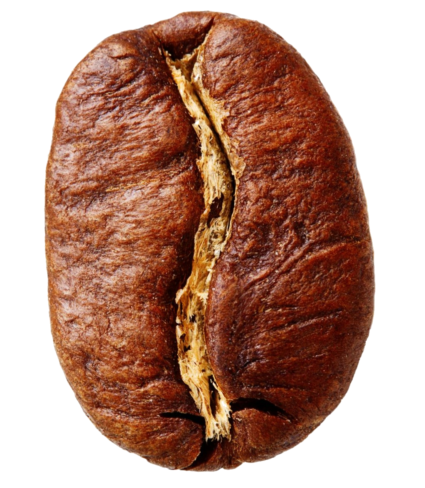
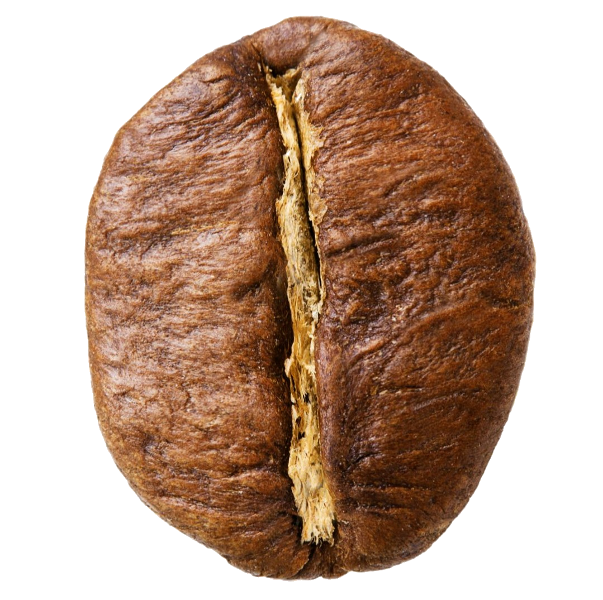

L'arabica
L'arabica est une espèce de café qui représente environ 60 % de la production mondiale. La plante à partir de laquelle il est produit est également connue sous le nom de Coffea arabica.
Il est principalement cultivé dans les régions montagneuses. Le Brésil domine la production mondiale. Mais on le trouve aussi en Colombie, en Indonésie, en Éthiopie et dans d'autres pays tropicaux.
Le café arabica se distingue par ses propriétés gustatives exceptionnelles. Ses grains ont généralement une teneur en caféine relativement faible. Cela le rend plus doux pour l'estomac et moins stimulant que le robusta.

Le Robusta
Le Robusta est la deuxième espèce de café la plus produite globalement derière l’Arabica. La plante à partir de laquelle il est produit est également connue sous le nom de Coffea canephora.
Le Robusta résiste mieux aux maladies et aux climats difficiles que sont grand frère (d’où son nom).Cette résistance naturelle explique en partie pourquoi il est plus facile à cultiver et souvent plus accessible en termes de prix.
L’une des caractéristiques majeures du Robusta, est sa forte teneur en caféine : environ deux fois plus élevée que celle de l’Arabica.Cela donne un café plus intense, plus puissant, avec une amertume marquée et une sensation de corps plus dense.